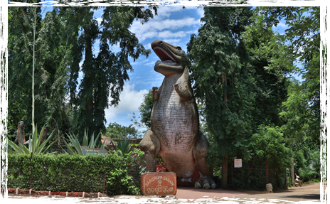

Nandankanan had a very interesting beginning. Some forest officials conceived the idea of including some rare wild animals and rare orchids typical to our State in the Odisha pavilion in World Agricultural Fair 1960 at Delhi. It was contemplated that rare animals from Odisha would certainly make the Odisha pavilion a crowd puller. Since procurement of wild animal and their transport to Delhi would be an expensive affair, therefore it was decided to include small animals like Mouse deer , Leopard cat, Wild cat, Pangolin, Racket tailed drongo , Flying Squirrel, Hill Mynah, Peacock etc. The idea was much appreciated at the higher level and a decision was taken to have a mini zoo in the World Agricultural Fair. Since there was hardly any time for the capture of wild animals from wild, it was decided to approach persons who are in possession of the wild animals and procure the same by way of hire or purchase for the exhibition. Accordingly the Divisional Forest Officers were instructed to procure the wild animals for dispatch to Delhi. Fortunately within a month several wild animals i.e. two Spotted deer, two Barking deer, two Black buck, one Mouse deer, one Leopard cat, one Flying squirrel, one Racket-tailed drongo, one Hornbill, two Parrots, two Hill Mynah, one Peacock, one Mongoose were collected. The then Divisional Forest Officer, Deogarh (Late G.M. Das) captured one Pangolin (Scaly ant-eater), two porcupines from the forests. Similarly Late P. Mohapatra, the then Divisional Forest Officer, Puri captured a pair of wild boars and a Python from the forest. All these animals were sent to the Delhi and exhibited inside Odisha Pavilion in the World Agricultural Fair.
Unfortunately the State Finance Department raised serious objections to the idea of starting a zoo in Odisha as it would involve a lot of expenditure for its establishment and maintenance. Such a venture at that point of time needed deliberation in the legislative assembly and special budget provision. In the meantime the wild animals arrived at Bhubaneswar by May, 1960 and their upkeep and feeding posed a serious problem for forest department. Fortunately the late P. Mohapatra, Divisional Forest Officer, Puri and the Late G.K. Das, Divisional Forest Officer, Deogarh came to the department’s rescue. With their co-operation and efforts, temporary structures with brush wood and thatched roof were constructed at Khandagiri near Bhubaneswar to shelter these wild animals. The Jain community also came forward with the help of feeding these wild animals at Khandagiri. These animals at Khandagiri attracted large number of visitors both from Bhubaneswar town and neighboring villages. On the 6th day Dr. H.K. Mahatab, the then Chief Minister of Odisha was pleased to see these wild animals. He immediately discussed with the Forest Minister, Forest Secretary, Finance Secretary, Chief Secretary and Chief Conservator of Forests regarding establishment of a Zoo in Odisha.
Initially it was proposed to have the zoo at Ghatikia close to Khandagiri and Udayagiri caves . It would also provide recreation to the urban population of Bhubaneswar. Later it was felt that Ghatikia would pose water problems in future. A zoo needs lot of water to meet the need of animals, cleaning of animals sheds and for various other purposes. The then Range Officer, Chandaka suggested Jujhagarh forest block on Kanjia lake near Barang Railway station as the most ideal location. The then Chief Conservator of Forests, Divisional Forest Officer, Puri, Range Officer, Chandaka and D.P. Ghosh, Forest Ranger visited the place and were impressed with its scenic beauty. Kanjia lake with its vast expanse over 125 acres low and undulating hills of Jujhagarh and Krushnanagar D.P.F.S. with lush green vegetation on both sides of the lake presented a picturesque site. Jujhagarh Forest Block had all the advantages for locating the zoo except communication from Bhubaneswar and the only approach was via Chandaka covering a distance of 38 Km.
A committee consisting of Dr. Radhanath Rath, Sri G.C. Dash and Sri D.N. Choudhury, the then Minister of Forests, Secretary, Forest and the Chief Conservator of Forests respectively visited the place. They were very much impressed with its aesthetic beauty and recommended location of the zoo there with construction of a straight road (a distance of 14 to 15 Kms.) from Bhubaneswar. Accordingly it was decided to locate the Zoological Park in Jujhagarh Forest Block, Botanical garden in Krushnanagar Forest Block and develop Kanjia lake for Boating and Angling. The Director, Fisheries agreed to develop a portion of the lake for rearing various kinds of fish for visitors to see. Initially it was decided to keep spotted deer, barking deer, black bucks, wild boars, sambars, nilagai and bears in spacious enclosures. Other animals like leopard cat, mongoose, flying squirrel, porcupine, python, monkeys, hyena, jackal, civet cat, pangolin, jungle cat , parrots, mynah and other birds in suitable cages. It was decided to put efforts to capture tigers and leopards which could be exhibited in suitable cages for the time being and the suitable spacious enclosures would be built for them later on. It was also decided to raise a good flower garden and to plant important species and medicinal plants of Odisha inside proposed Botanical garden in Krushnanagar D.P.F.
It was contemplated to create nature simulating artificial streams and waterfalls by pumping water from the lake to a reservoir on the hill top and allowing the water to flow through these winding streams and locate animal enclosures along these streams so that the stream would act as barrier. Visitors would view the wild animals from the other side of the stream. Accordingly a plan was drawn but was to be abandoned because of high cost. Instead it was decided to construct enclosures, with chain link mesh fencing on three sides and wide water moat on the fourth side so that visitors can see wild animals from the moat sde. A net work of roads would be constructed and animal enclosures as well as animals cages would be located along these roads. The construction activities were started over a small area to begin with to house some herbivores like Cheetals, Sambar, Barking deers and a few birds.
On 29th December, 1960, Sri S.K. Patil, the then Minister of Food and Agriculture, Govt. of India inaugurated the new Biological Park christened as “Nandankanan” the heavenly garden of God. Subsequently, a Botanical Garden came up in the year 1963. The Nandankanan Biological Park was renamed as Nandankanan Zoological Park on recommendation of the Odisha Legislative Assembly Committee on Estimates, 1981-82. The zoo started growing slowly with addition of new enclosures and the first tiger was brought to the zoo in the year 1964 from the Aplipore Zoo in Calcutta along with a pair of African lions, a puma and a pair of muggers during All India Congress Committee session at Bhubaneswar.